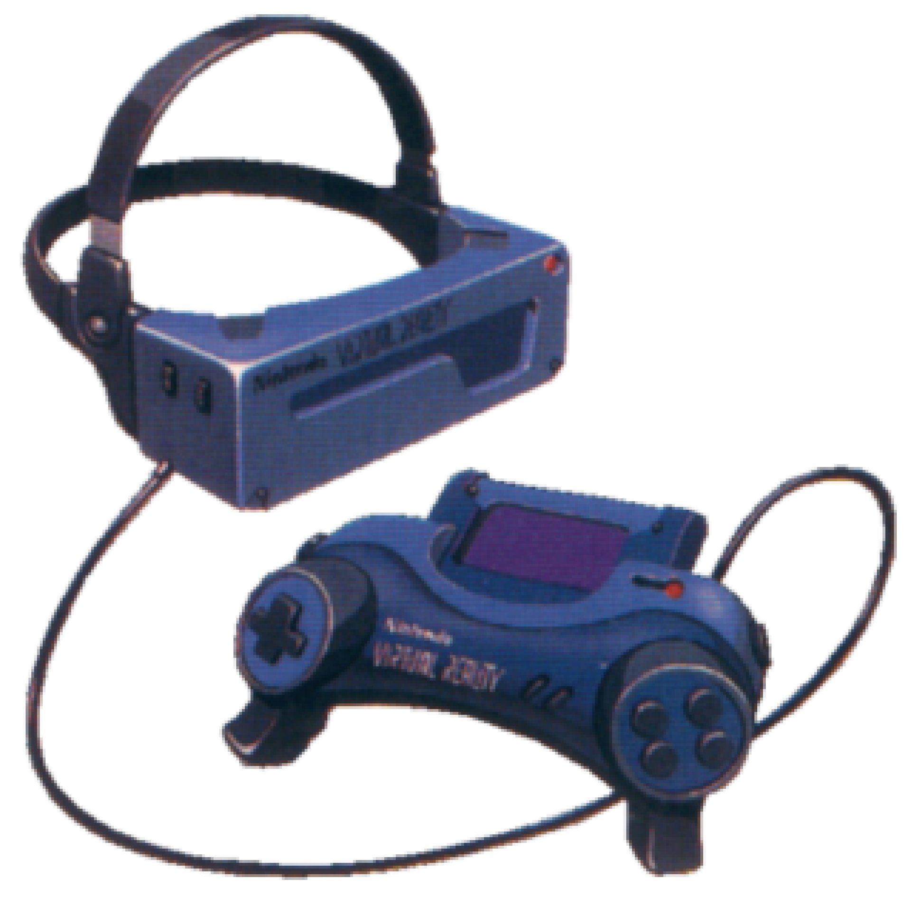

-
1985
The Journey Begins
The story that led to the Virtual Boy coming around was actually started in America, Massachusetts. In 1985 Allen Becker and engineer, thought of a device that would allow you to view information while using both hands for other tasks. This device used LEDs to create a headmounted personal display. Named SLA – Scanned Linear Array, it was cheap and easy to mass produce.
 The one and only Allen Becker
The one and only Allen Becker -
1986
Private Eye enters the game
Becker started his company, Reflection Technology inc. and renamed his device “Private Eye.” This technology predated Google Glass. Becker showed the tech off at many trade shows but it didn’t seem to spark any attention. Until the virtual reality boom happened.
 The Private Eye, 25 years before google glass
The Private Eye, 25 years before google glass -
1988
Hitting the headlines!
In Las Vegas at the COMDEX show, several media publications chose the Private Eye as one of the gadgets not to miss at the show. This resulted in mass press attention and features in magazines and brought potential sales leads.
Magazine promoting the Private Eye -
1990
The virtual boy we all know of begins to take form
Early on in the 90’s Reflection technology engineers made a video game demo using two of the Private Eye units mounted to a mask. With attached head tracking to monitor movement and the displays hooked up to a IMB PC compatible computer running a tank simulation game this was one of the earliest forms of virtual reality
 Allen Becker trying on an early prototype of the virtual boy
Allen Becker trying on an early prototype of the virtual boy -
1991
Rejections and new horizons
After rejections from many companies including Sega, Reflection technology’s marketing director Steve Lipsey used his connections and flew to Japan, Kyoto to visit the renown video game behemoth Nintendo Co Ltd.
 Steve Lipsey, the Vice President of sales at Reflection
Steve Lipsey, the Vice President of sales at Reflection -
1992
Nintendo joins the party!
Nintendo were happy to receive the offer as Gunpei Yokoi was interested in using existing cheap technology in interesting ways. Nintendo entered an exclusive agreement with Reflection technology to licence the displays. Yokoi was 49 and suddenly had the opportunity to move Nintendo in a new direction. He put his retirement plans on hold to pursue this. The creation of this console was intended to give Nintendo the reputation of innovators and creative in games. The project was codenamed “VR32”
The vr32 prototype -
1993
Internal pressures
Nintendo first revealed Virtual Boy to the public at the Shoshinkai Tech Exhibition in Harumi, Japan. Participants had the opportunity to play games like Space Pinball and a boxing game called Teleboxer. The first reaction in Japan was warm, with a mixture of amazement at stereoscopic technology, but disappointment at its all-red monitor and its target retail price, estimated to be around US$200.
Another legendary Nintendo console, the nintendo 64 prototype - the ultra 64 -
1994
All aboard the hype train!
The Virtual Boy made his U.S. debut in Las Vegas at the CES show. Few major media outlets discussed the device before it was launched, displaying a reserved hope on behalf of the monstrously powerful Nintendo. At the same time, the enthusiast press on the emerging system did not pull any shots. A member of the public commented “My biggest concern is Nintendo trying to pass this off to the public as virtual reality. It’s not,”
 The virtual boy at Shoshinkai
The virtual boy at Shoshinkai -
Early 1995
Haters gonna hate
In the months leading up to the launch of the Virtual Boy in Japan, the media exploited Virtual Boy's health concerns and eye alerts, suggesting that the console was certainly a problem for the players' eyes and wellbeing. It should not be surprising that the device was not introduced with excitement when released in Japan. Unlike the Mega Famicom, which had seen a queue of shoppers in the street, while the new console by Nintendo had no one lining up.
1995 Winter CES at Las Vegas -
Mid 1995
Ready! Set! Liftoff?.
Luckily for Nintendo’s America, the press did not show up issues on the Virtual Boy health purposes, but when it began for $179.95, sales at first seemed to be enthusiastic. In the U.S., Nintendo had partnered with Blockbuster to rent out the system so that people could experience it on their own, a unique strategy to solve the difficulties of presenting the 3D system of the device on print and advertising. Nintendo, had to reduce Virtual Boy’s price by $20 to $159.95 on October 18th.
The virtual boy at ShoshinkaiLate 1995America strikes back!
By December, the Virtual Boy had only sold 140,000 in its home country, Japan. Things were looking dim for the future of the console. This was considered and embarrassing failure by Nintendo’s standards, Yamachi decided to terminate the project and putll the plug in Japan. This was only six months after release, an attempt to avoid spending any more money on the obvious flop.
Blockbuster advertisment for its rental schemeEarly 1996The sun sets on the land of the rising sun
While it had flopped in Japan the Virtual Boy fared better in the U.S. but Nintento still had to keep cutting the price, to attempt to build up momentum in the project, but it was not to be. NOA dropped the price to $99.
 Hiroshi Yamauchi, 3rd President of Nintendo from 1949-2002Mid 1996
Hiroshi Yamauchi, 3rd President of Nintendo from 1949-2002Mid 1996Dark times
After a showing at E3, Nintendo dropped mention of the Virtual Boy from its marketing plans, and in August of that year, it officially pulled the plug once and for all. Virtual Boy began showing up in the clearance aisles of toy stores like Toys “R” Us for $30 or less. Back in Massachusetts, Reflection Technology reeled at the turn of events. Most shocked of all was Allen Becker, who had essentially bet the company on the success of the Virtual Boy.
 ad for the Virtual Boy, promoting its $80 discountLate 1996
ad for the Virtual Boy, promoting its $80 discountLate 1996The industry is shaken
Yokoi tendered his resignation. After nearly 31 years with Nintendo, and four years after he originally planned to do so. His departure shocked the industry. Both American and Japanese press could not help but link his departure to the commercial failure of the Virtual Boy. “Yokoi was very troubled by these reports, which were all based on misunderstandings,”
The virtual boy at ShoshinkaiEarly 1997A titan falls
One month after deciding to leave his position at Nintendo, Yokoi formed a new company named Koto Laboratory, along with Yoshihiro Taki, an R&D1 colleague who had left at around the same time. Tragically, Yokoi has not been able to appreciate his career of redemption for a long time. On 4 October 1997, just over a year after he left Nintendo, he was involved in a minor traffic collision on the highway in the north of Tokyo. As he and the driver left the vehicle to inspected the damage, another car accelerated and hit Yokoi, killing him. He was 56 years old.
 Gunpei Yokoi, creator of the Nintendo GameBoy and Virtual BoyLate 1997
Gunpei Yokoi, creator of the Nintendo GameBoy and Virtual BoyLate 1997Keep on trying...
Reflection Technology, had hoped to develop the system into an IPO. FaxView went into development at the end of 1995, but it struggled to take off, so the business found further funding and went into testing mode, but the loss of Virtual Boy struck the company hard, and FaxView even floated in retail. Apparently, the company was working on a full-color version of the technologies in 1997, but it ran out of finances before it could get the system to the market.
The faxview, a virtual reality gadget for viewing faxes... create!2001Becoming a legacy
Al Becker, an ambicious founder, quickly moved to another venture involving water purification technology for developing nations. This journey was interrupted when, on October 14, 2001, he unexpectedly died in a fractured artery at his home while watching TV. He was 53 years old. For both Yokoi and Becker, the Virtual Boy's faulty genius is part of an impressive legacy—dark debut, spectacular failure.
 The Virtual Boy, proudly standing at the Perth Museum and Art Gallery
The Virtual Boy, proudly standing at the Perth Museum and Art Gallery
SHIFT+SCROLL TO MOVE WITH MOUSE